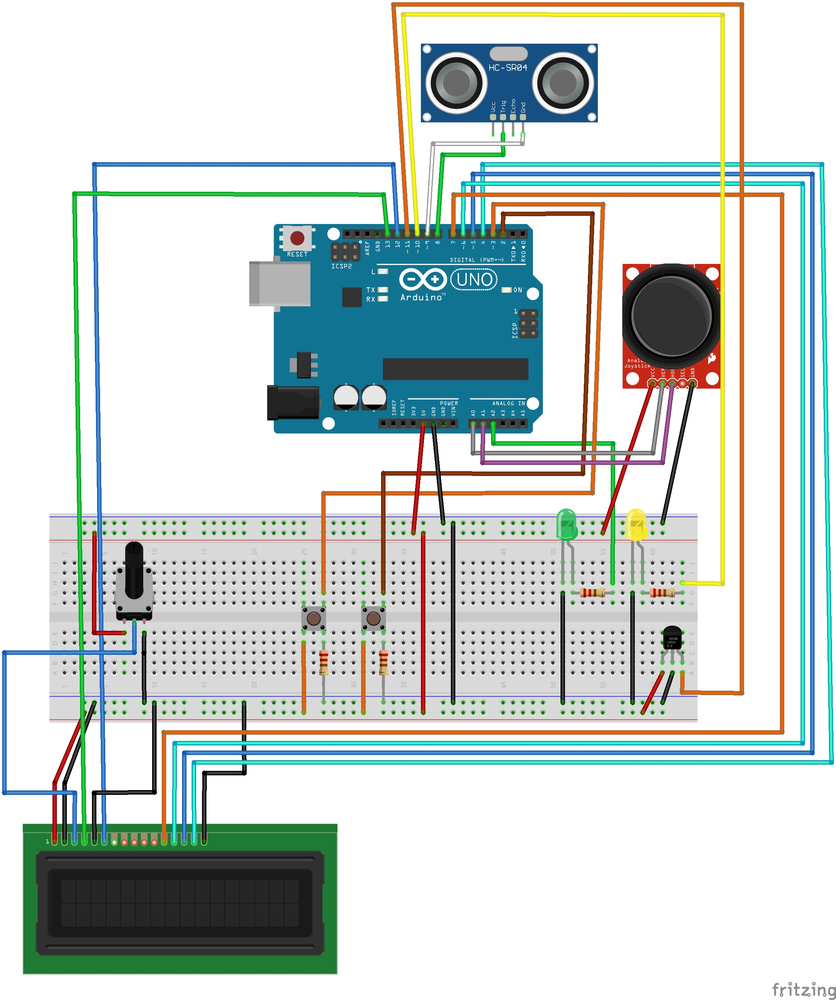
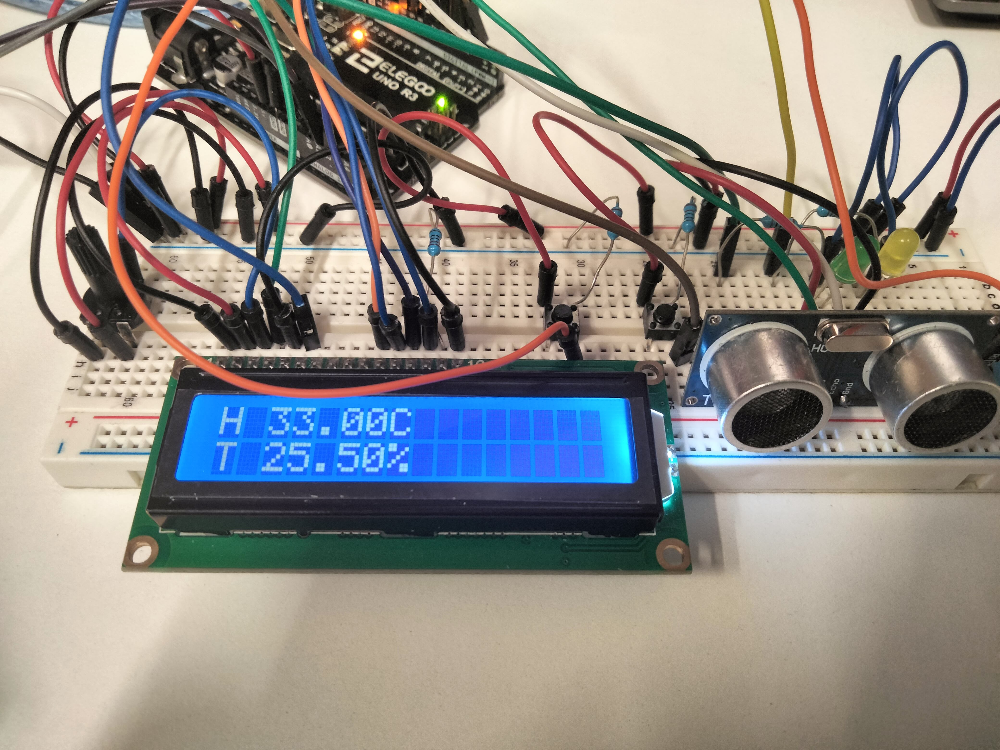
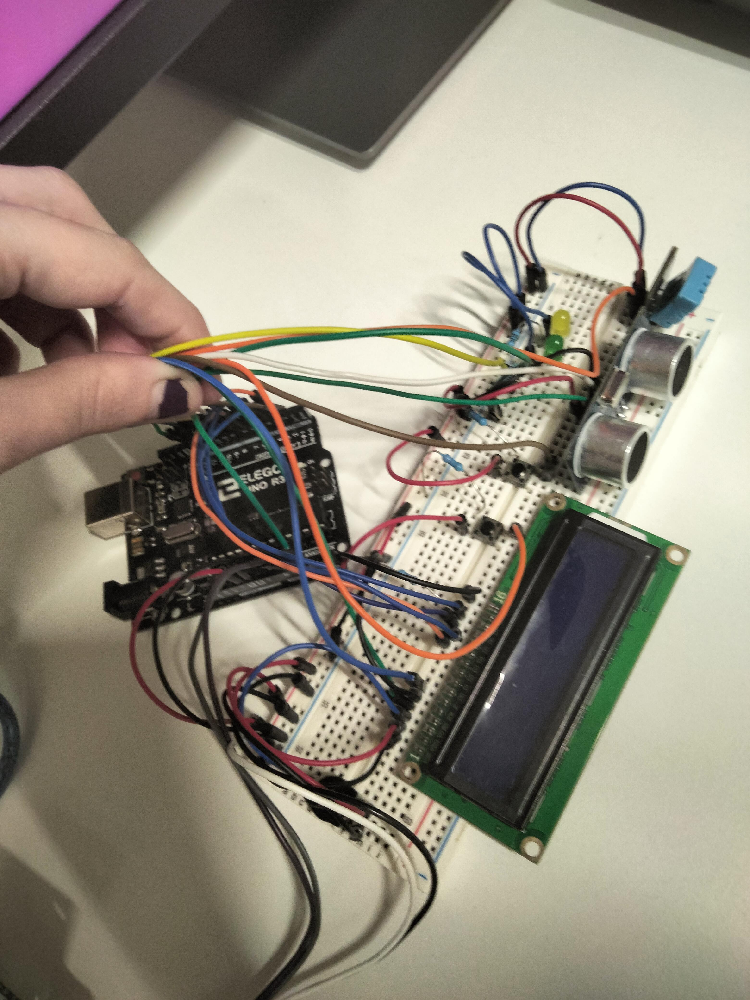
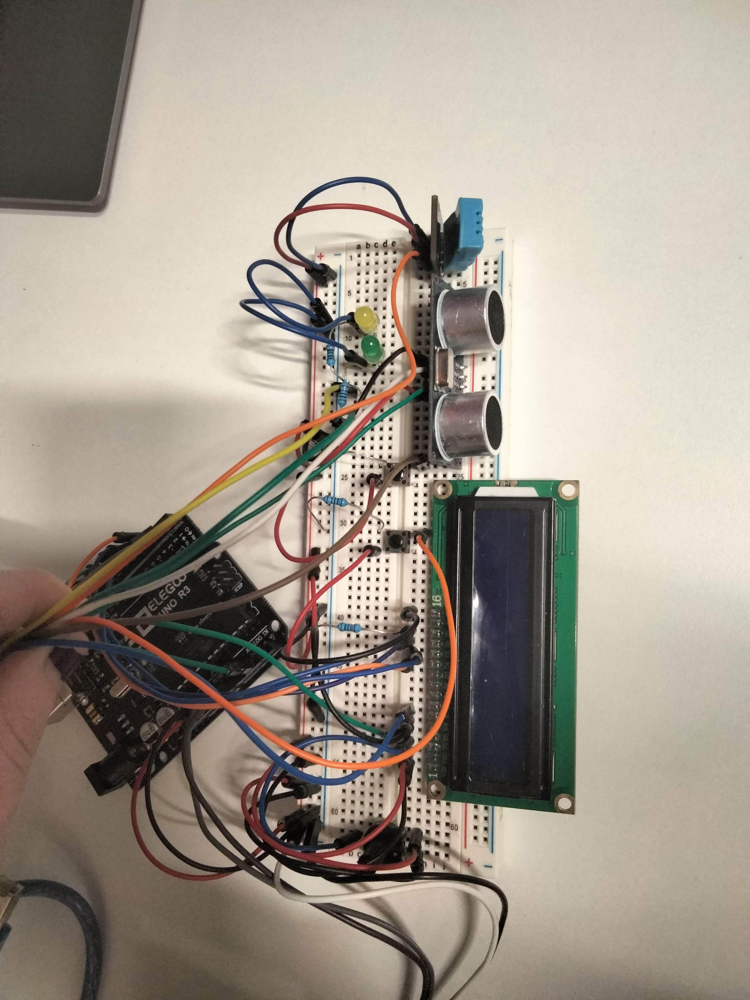

Silvia Calvo Cabello
La práctica consiste en diseñar e implementar un controlador para una máquina expendedora utilizando un Arduino UNO y diversos sensores y actuadores.
1. Arranque
- Al iniciar, el LED1 parpadea 3 veces, y se muestra el mensaje "CARGANDO..." en el LCD.
- Tras los parpadeos, el LED1 se apaga y se muestra "Servicio" en el LCD.
2. Servicio
- Si el usuario está a menos de 1 metro de la máquina, el LCD muestra la temperatura y humedad durante 5 segundos, y luego presenta una lista de productos con precios. Los productos incluyen diferentes tipos de café y chocolate.
- El usuario puede navegar por la lista utilizando el joystick y seleccionar un producto con el botón del joystick.
- Tras seleccionar, el LCD muestra "Preparando Café..." por un tiempo aleatorio entre 4 y 8 segundos. Durante este tiempo, el LED2 se enciende de manera incremental, indicando el progreso de la preparación.
- Al terminar, el LCD muestra "RETIRE BEBIDA" por 3 segundos y vuelve al estado inicial.
3. Admin
- Se puede acceder a la interfaz de administración presionando el botón durante 5 segundos.
- En la vista de Admin, ambos LEDs se encienden y se muestra un menú con opciones para ver la temperatura, la distancia del sensor, el contador de tiempo y modificar los precios de los productos.
- Los precios se modifican utilizando el joystick y confirmando con el botón. Los cambios de precio se actualizan en el menú de selección de productos.
- Para salir de la vista Admin, el usuario debe presionar el botón nuevamente durante 5 segundos.
Para el control se ha implementado una máquina de estados:
Estados del sistema:
WAITING: Espera a que un cliente se acerque y active el sistema.
DATA_SHOW: Muestra información de temperatura y humedad.
SELECTION: Permite al usuario seleccionar el tipo de café.
PREPARING_COFFEE: El sistema simula la preparación del café.
GET_COFFEE: El usuario puede recoger el café preparado.
ADMIN_CHOOSING: Modo de administrador donde se elige qué datos ver o modificar.
ADMIN_SELECTED: El administrador ha seleccionado una opción.
Estados del administrador:
TEMP: Ver la temperatura del entorno.
DISTANCE: Ver la distancia medida por el sensor ultrasónico.
TIME_PASS: Ver el tiempo transcurrido desde que se encendió el sistema.
CHANGE_PRICES: Cambiar los precios de los cafés.
FOTO DIAGRAMA DE ESTADOS
- Arduino UNO
- LCD
- Joystick
- Sensor Temperatura/Humedad DHT11
- Sensor Ultrasonidos HC-SR04
- 2 Botones
- 2 LEDs (LED1 Amarillo, LED2 Verde)
1. Arduino UNO
Para qué sirve: El Arduino UNO es la placa base que controla y gestiona todos los componentes conectados (sensores, botones, LEDs y la pantalla LCD). Actúa como el cerebro de la máquina expendedora, enviando y recibiendo señales a través de sus pines.
Cómo funciona: A través de sus pines de entrada y salida, el Arduino UNO recibe información de los sensores (como el DHT11 o el sensor ultrasonidos) y envía señales a los LEDs y al LCD. Realiza todas las operaciones necesarias para gestionar la máquina expendedora.
2. LCD
Para qué sirve: El LCD sirve como interfaz visual entre la máquina y el usuario. Muestra información como la lista de productos, precios, temperatura y humedad, así como mensajes de estado como "Cargando..." o "Preparando Café...".
Cómo funciona: El Arduino UNO controla el LCD, enviando información a través de los pines de datos. El LCD es alimentado por la placa Arduino, y los mensajes que muestra son actualizados según las señales enviadas por el microcontrolador.
3. Joystick
Para qué sirve: El joystick es un dispositivo de entrada que permite al usuario navegar por los menús y seleccionar productos en la máquina expendedora.
Cómo funciona: El joystick tiene dos funciones: el movimiento hacia arriba/abajo para navegar por las opciones y izquierda para salir del menu de cambio de precios al menu de administrador.
4. Sensor Temperatura/Humedad DHT11
Para qué sirve: El sensor DHT11 mide la temperatura y la humedad del ambiente y proporciona estos datos al Arduino para que puedan ser mostrados en el LCD.
Cómo funciona: El sensor DHT11 tiene dos pines principales: uno para la alimentación (VCC) y otro para los datos (DATA). El Arduino lee estos datos de forma digital y los muestra en el LCD en tiempo real. El DHT11 es capaz de proporcionar lecturas de temperatura y humedad de manera precisa dentro de un rango determinado.
5. Sensor Ultrasonidos HC-SR04
Para qué sirve: El sensor ultrasonidos HC-SR04 se utiliza para medir la distancia entre el sensor y un objeto (en este caso, la proximidad del usuario a la máquina expendedora).
Cómo funciona: El sensor emite ondas ultrasónicas a través del pin TRIG, y luego mide el tiempo que tarda la señal reflejada en regresar al pin ECHO. El Arduino calcula la distancia con base en este tiempo de regreso, permitiendo detectar si el usuario está a menos de 1 metro de la máquina.
6. Boton 1 (Seleccion) Boton 2 (Joystick)
Para qué sirven: El boton 1 permite al usuario interactuar con la máquina. Se utiliza para realizar selecciones de productos y aceptar el cambio de precio de los productos. El botón 2 sirve para acceder al menú del administrador y salir de este.
Cómo funcionan: Los botones están conectados al Arduino, que detecta cuando son presionados, estando conectados a los pines 2 y 3 para las interrupciones
Son 2 botones porque el del joystick original no funcionaba y lo cambié por un botón normal7. LED1 (Verde) y LED2 (Amarillo)
Para qué sirven: Los LEDs indican el estado de la máquina expendedora. El LED1 (amarillo) muestra el estado de arranque o de error, y el LED2 (verde) indica el progreso de la preparación del producto.
Cómo funcionan: El LED1 parpadea al inicio del sistema como una señal visual de que la máquina está arrancando. El LED2 se ilumina de manera progresiva durante la preparación de un producto (como el café), aumentando su intensidad conforme el proceso avanza. Ambos LEDs requieren resistencias de 220 ohmios para evitar que se sobrecalienten.
A continuacion se muestra una imagen del conexionado de la práctica usando Fritzviz




Boton joystick:
Como ya se ha mencinado antes, el botón del joystic no funcionaba por lo que se usa un botón normal en su lugar.
Uso de if else y no switch case :
El switch necesita que todas las variables de declaren fuera, y para una mejor compresión del código decidí dejarlo en un else if y poder declarar variables dentro de cada estado.
Cambiar de target:
Esta práctica se ha implementado de tal forma que una vez selecionado el target, no va a cambiar hasta que llegue al objetivo, y una vez alcanzado este, ya vuelve a calcular para el siguiente.
Por pasos:
Para realizar esta práctica, se hizo incremntalmente, probando los sensores y haciendo cada parte por separado. Y luego se pasó a diseñar la máquina de estados.
Pantalla Led:
Por como estaba implementado la detección del joystick, la pantalla led se actualizaba cada loop en vez de cada vez que cambiaban los datos, por o que la pantalla parpareaba constantemtente. Para evitar esto se puso que la pantalla solo se actualizase al mover la lista de selccion, o en caso de mostrar datos, cada 500 ms.
Deteccion joystick
Al principio,para la deteccion del joystick hice que se comparase la lectura inmediatamente anterior con la actual para saber si habia incrementado o decrecido el valor, pero esto probocabaque el joystick tuvieses que moverlo en un tiempo exacto, por lo que se perdian muchos intentos. Cambié esto a que detecte cuando haya subido y lo haga solo una vez (activando una variable, un flag), cuando el valor se 0 (+-un margen) se reinicia la variable y así puede detectar un nuevo cambio .
A continuacion se puede ver el funcionamiento de la máquina expendedora, hay dos videos, uno mostrando todo el funcionamiento menos esperar cliente (estaba yo en medio explicando el video entoces nunca detectaba que no hubiesee alguien), y el otro, el funcionamiento de esperar cliente.